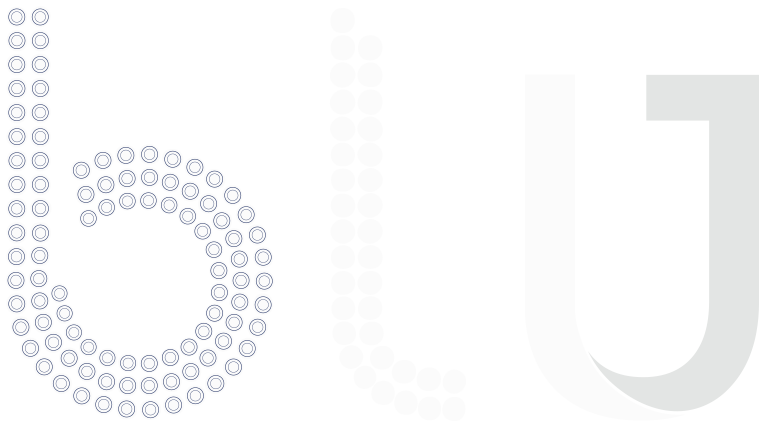

Método
Um comercial tem três camadas. Vender bem é controlar as três.
A maioria das operações vende com uma perna só: mais ligação, mais mensagem. A BLU trata a prospecção como um sistema — primeiro decide onde vale a pena jogar, depois define estrutura e ritmo, e só então executa com tudo registrado.
O que prospectamos
Duas teses tributárias, uma janela curta.
A jornada do projeto
Da primeira linha de código à reta final.
Resumo até aqui
O projeto em quatro números.
O funil
Dos leads ao contrato, etapa por etapa.
Cada barra é proporcional ao volume real da etapa. O número sobre a linha mostra quanto da etapa anterior chegou até ali.
Ritmo mensal
Como a operação ganhou tração.
Esforço da operação
Onde o time colocou a energia.
Quem sentou à mesa
O perfil das empresas que viraram reunião.
Reuniões agendadas
As empresas, uma a uma.
| Empresa | Tese | UF | Término da cadência | Situação |
|---|
Aprendizados
O que o caminho ensinou.
Próximos passos